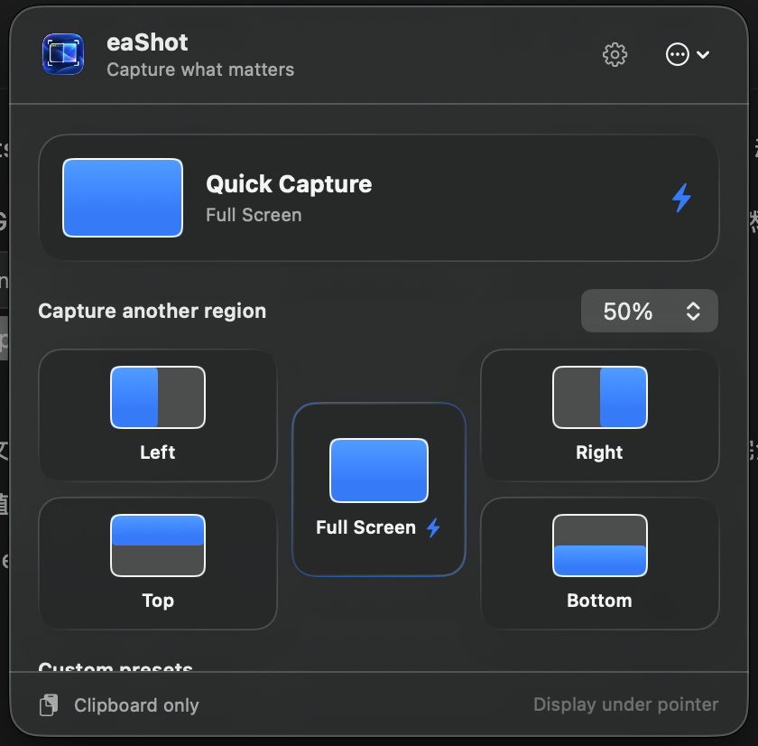

Anchored regions
Full screen, four edges, seven proportions—25% to 75%. The region stays anchored to the edge you chose, every single time.
Right half, left third, top 40%. Put the pointer on a display and eaShot captures that anchored region straight to your clipboard—without drawing a selection box.
Built for bug reports, visual checks, dashboards, and documentation you repeat every day.
macOS 15 or later · Apple silicon and Intel · No subscription
Pick the part you need. Your last successful region is ready next time.
Everything it does
Full screen, four edges, seven proportions—25% to 75%. The region stays anchored to the edge you chose, every single time.
Move the pointer to a display, press the shortcut, and that display is captured. Multi-monitor setups just work.
Pin your most-used region—or up to six named preset slots, each with its own global shortcut. One keystroke, no dragging, no cropping.
Paste straight into your ticket or doc, save to a folder you chose once, or do both in one action.
Your last successful choice becomes the next Quick Capture by default. Local suggestions learn frequent regions—quietly.
No account, no analytics, no cloud, no background screen watching. Pixels are read only when you capture.
Choose an anchored edge and the percentage you need right now.
eaShot captures the display under your pointer without opening an editor.
The PNG is already on your clipboard. Saving to a chosen folder is optional.
Open eaShot from your menu bar for the occasional alternative. Global shortcuts start unset, confirmations can be hidden, and nothing watches your screen in the background.

Honest comparison
| Capability | eaShot · US$4.99 | Capture suites · ~$29+ | macOS built-in |
|---|---|---|---|
| Repeatable anchored regions | ✓ Core feature | Manual re-selection each time | — |
| One-shortcut capture | ✓ | ✓ | Partial |
| Display under pointer | ✓ | ✓ | — |
| No subscription | ✓ One-time | Often subscription | ✓ |
| Annotation, OCR, recording | — On purpose | ✓ | Partial |
| Cloud upload | — On purpose | ✓ | — |
Suites are brilliant when you need everything. eaShot is for the captures you repeat all day—one keystroke, already on your clipboard.
macOS 15 or later, on Apple silicon and Intel Macs. eaShot is universal and sandboxed.
macOS requires this one-time permission for any app that reads pixels from the display. Grant it when the app asks, in System Settings → Privacy & Security → Screen Recording. You can revoke it at any time and eaShot keeps working only up to that point.
No. Captures go to your clipboard and, if you choose, a folder you picked. There is no account, no analytics, and no cloud service. Suggestion history stores region, ratio, source, and time—never pixels or app names.
Those are excellent capture suites with editors, OCR, and recording. eaShot does one thing: repeatable anchored regions in one keystroke, for less than the cost of a coffee. Many people use both—eaShot for the daily repeats, a suite when they need to annotate.
The Mac App Store doesn't offer trials for paid apps. The upside of a one-time US$4.99 purchase is that you own it—no subscription to remember to cancel.
Yes. Quick Capture and Open Chooser both accept custom global shortcuts in Settings → Shortcuts. They start unset so eaShot never takes over an existing macOS key combination.
eaShot follows your last successful menu choice by default. Prefer one fixed preset? Pin Quick Capture and keep frequent-region suggestions quiet and local.
Captures go only to your clipboard and the folder you explicitly choose.
No login, analytics profile, cloud library, or background screen stream.
Suggestions store region, ratio, source, and time—never pixels or app names.
Mac App Store · Version 1.0
US$4.99 once. Yours forever—with no subscription, account, advertising, or cloud service. Local pricing applies in your storefront.
Available now
Stop dragging the same selection box. Put your favorite capture on a shortcut and get on with your work.